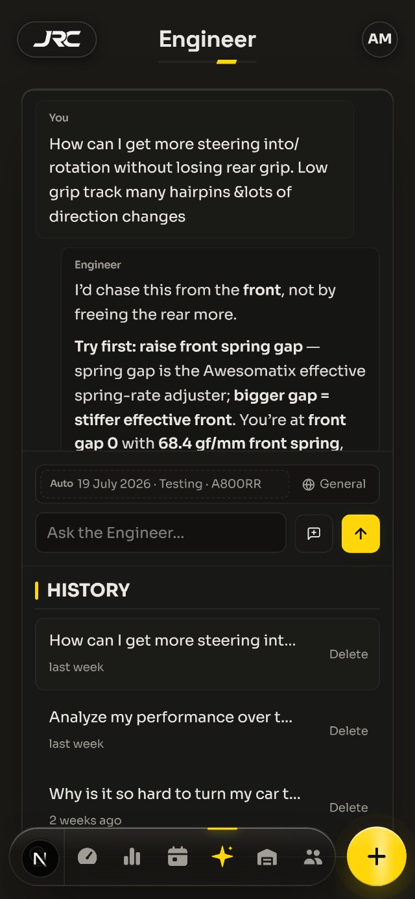

Your next tenth
is in the data
Log a run in a minute. Ask how to make the car quicker — the answer comes from your own setups and lap times.
Log a run in a minute. Ask how to make the car quicker — the answer comes from your own setups and lap times.
